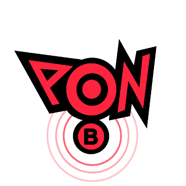
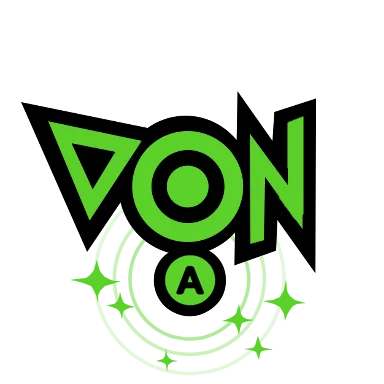

En el mundo de los videojuegos, algunas franquicias logran dejar una huella imborrable en la memoria de los jugadores. Una de estas franquicias es "Patapon", un juego de ritmo y estrategia que cautivó a los fanáticos con su estilo único y su encanto visual. Recientemente, la espera de los seguidores de la serie ha llegado a su fin con el regreso de la icónica saga junto con una sorpresa adicional: "Ratatan", un sucesor espiritual que busca capturar la esencia del juego original mientras agrega su propio giro creativo. En este informe, exploraremos el regreso de "Patapon" y la llegada de "Ratatan", analizando cómo ambos juegos han evolucionado y cómo están siendo recibidos por la comunidad de jugadores.
El Regreso Triunfal de "Patapon"
Desarrollado por Pyramid y SCE Japan Studio, el juego original "Patapon" fue lanzado por primera vez en 2007 para la consola PlayStation Portable (PSP). Su combinación de elementos de ritmo y estrategia, acompañados por un estilo artístico distintivo y adictivas mecánicas de juego, lo convirtieron en un título de culto. Los jugadores asumían el papel de un dios que dirigía a un ejército de pequeñas criaturas llamadas Patapon a través de niveles llenos de enemigos y obstáculos, usando comandos rítmicos para avanzar.
El regreso de "Patapon" se materializó en forma de una remasterización para la PlayStation 4, lo que permitió a una nueva generación de jugadores experimentar la magia de este juego único. La remasterización conserva el encanto visual del original mientras mejora los gráficos y el rendimiento para adaptarse a las capacidades de la PS4. Esto generó una ola de nostalgia entre los fans de la serie, así como la oportunidad para nuevos jugadores de disfrutar de la experiencia por primera vez.
El Surgimiento de "Ratatan": Un Sucesor Espiritual
La sorpresa adicional para los fanáticos llegó con el anuncio de "Ratatan", un juego que se autodenomina como el sucesor espiritual de "Patapon". Desarrollado por el ahora equipo independiente "RATATA ARTS" el cual esta formado por viejos conocidos y nuevas caras que se suman al proyecto, "Ratatan" toma inspiración de las mecánicas de ritmo y estrategia de "Patapon", pero añade su propio enfoque creativo.
En "Ratatan", los jugadores lideran a un grupo de criaturas llamdas "Kobun", los cuales son liderados por los "Ratatans" músicos en su búsqueda por devolver la música al mundo. Al igual que en "Patapon", la jugabilidad se centra en seguir ritmos precisos para avanzar, atacar y defender. Sin embargo, "Ratatan" introduce nuevos instrumentos, enemigos y mecánicas, brindando una experiencia fresca mientras conserva la esencia que los fanáticos adoraban en "Patapon".
Recepción y Impacto en la Comunidad
Tanto el regreso de "Patapon" como el debut de "Ratatan" han sido recibidos con entusiasmo en la comunidad de jugadores. Los fans de la franquicia original celebraron la oportunidad de revivir la experiencia clásica de "Patapon" en una nueva plataforma, mientras que la llegada de "Ratatan" generó curiosidad y emoción entre aquellos que buscaban algo similar a la serie original.
El éxito de estos juegos no solo radica en su jugabilidad única, sino también en su capacidad para evocar recuerdos y emociones de los jugadores que disfrutaron de "Patapon" en el pasado. Además, la recepción positiva de "Ratatan" demuestra que hay espacio para la innovación dentro del género de ritmo y estrategia, incluso cuando se trata de sucesores espirituales.
Conclusión
El regreso de "Patapon" y la aparición de "Ratatan" marcan un emocionante capítulo en la historia de los videojuegos. Ambos juegos demuestran cómo las mecánicas de ritmo y estrategia pueden fusionarse para crear experiencias únicas y memorables. A medida que los jugadores antiguos y nuevos se embarcan en estas aventuras musicales, queda claro que la magia de "Patapon" sigue viva, tanto en su forma original como en su sucesor espiritual, "Ratatan".